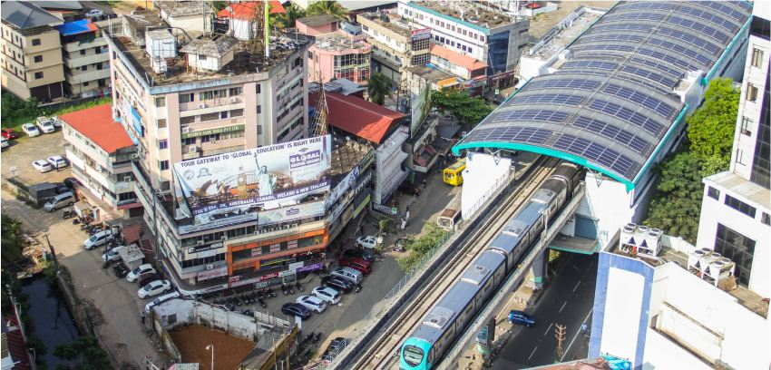

Aluva
Aluva Abundant bounty of nature in Kerala with a special focus on Western Ghats,Periyar & other rivers
THEMATIC STATION
There are 44 rivers in Kerala, all but three originating in the Western Ghats. 41 of them flow westward and 3 eastward. The rivers of Kerala are small, in terms of length, breadth and water discharge. The rivers flow faster, owing to the hilly terrain and the short distance between the Western Ghats and the sea.Major rivers: Periyar, Pamba, Bharathapuzha, Chaliyar, Chalakudi, Kadalundi.
Media and Gallery
Media & Gallery From the first-ever themed Metro stations to the brightest coaches, we bring to you a system that is not just a means of transportation but an extended part of your everyday life. Get a glimpse of how creative and unique we are:

